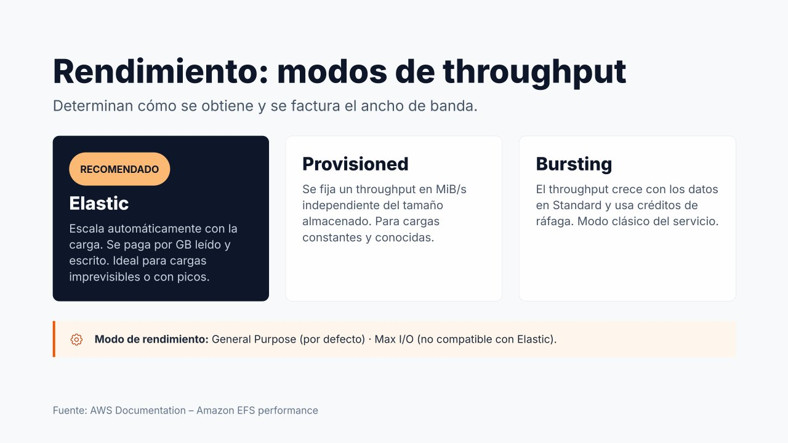

Rendimiento de EFS¶

Contenido de ampliación
Esta página es opcional. Desarrolla contenidos que en el núcleo de la unidad solo se mencionan. No es necesaria para realizar las prácticas.
A diferencia de EBS, en EFS no se eligen IOPS ni un tipo de disco. El rendimiento se configura con dos parámetros: el modo de rendimiento (throughput mode), que determina cómo obtiene el sistema de archivos su ancho de banda y cómo se factura, y el modo de desempeño (performance mode), que determina su comportamiento en latencia y paralelismo.
Modos de rendimiento (throughput)¶
Elastic (recomendado)¶
Es el modo por defecto y el recomendado por AWS para la mayoría de las cargas.
- El rendimiento escala automáticamente, hacia arriba y hacia abajo, según la actividad de la aplicación, sin necesidad de planificarlo.
- Se paga por la cantidad de datos leídos y escritos (por GB transferido), además del almacenamiento.
- Especialmente adecuado para cargas impredecibles o con picos puntuales, y para cargas con poca actividad media (se paga poco cuando no hay actividad).
Provisioned (aprovisionado)¶
Permite fijar un rendimiento concreto, en MiB/s, independiente de la cantidad de datos almacenada.
- Útil cuando se conoce con precisión el rendimiento que necesita una aplicación de carga constante y se quiere garantizar.
- Se paga el rendimiento aprovisionado haya o no actividad.
- Tras cambiar a Provisioned o aumentar el valor, hay que esperar al menos 24 horas para volver a cambiar de modo o reducirlo.
Bursting (ráfagas)¶
Es el modo original del servicio.
- El rendimiento base crece en proporción a los datos almacenados en la clase Standard (50 KiB/s por cada GiB).
- El sistema acumula créditos cuando consume menos que su base y los gasta para realizar ráfagas por encima de ella.
- Su inconveniente: un sistema de archivos pequeño dispone de muy poco rendimiento sostenido. Con 10 GiB almacenados, la base es de unos 0,5 MiB/s: cuando se agotan los créditos (métrica
BurstCreditBalance), la aplicación se vuelve extremadamente lenta.
| Modo | Rendimiento | Se factura | Cuándo elegirlo |
|---|---|---|---|
| Elastic | Automático según la carga | GB leídos y escritos | Por defecto; cargas variables o desconocidas |
| Provisioned | Fijo, en MiB/s | MiB/s aprovisionados (por mes) | Carga constante y conocida, con alta actividad media |
| Bursting | Proporcional a los datos en Standard, con créditos | Solo el almacenamiento | Sistemas grandes con uso moderado; heredado |
Cómo decidir entre Elastic y Provisioned
AWS sugiere observar la relación entre el rendimiento medio y el máximo de la carga. Si la carga es muy irregular (media muy inferior al pico), Elastic suele ser más barato. Si la carga es alta y sostenida (la media se acerca al pico), Provisioned puede resultar más económico. El modo puede cambiarse sin interrupción del servicio.
Modos de desempeño (performance mode)¶
| Modo | Características | Compatibilidad |
|---|---|---|
| General Purpose (Uso general) | Por defecto. Menor latencia por operación. Adecuado en la práctica totalidad de los casos: web, CMS, directorios de usuario, contenedores | Todos los tipos y modos |
| Max I/O (E/S máxima) | Modo anterior pensado para cargas muy paralelizadas, con mayor latencia por operación | No compatible con Elastic ni con One Zone |
El modo de desempeño se elige al crear el sistema de archivos y no puede modificarse. Hoy, con General Purpose y Elastic, el uso de Max I/O es muy limitado.
Configuración recomendada
Para la mayoría de aplicaciones: General Purpose + Elastic. Es la combinación que ofrece el mejor equilibrio entre simplicidad, coste, escalabilidad y rendimiento.
Cambiar el modo de rendimiento¶
- EFS → Sistemas de archivos, seleccionar el sistema.
- En la sección General, pulsar Editar.
- En Modo de rendimiento, elegir Mejorado y después Elástico o Aprovisionado (indicando los MiB/s), o bien Ráfagas.
- Guardar cambios. El cambio no interrumpe a los clientes conectados.
Si se acaba de pasar a Aprovisionado o de aumentar su valor, la consola no permitirá volver a cambiar el modo ni reducirlo hasta pasadas 24 horas.
# Pasar a Provisioned con 128 MiB/s
aws efs update-file-system --file-system-id fs-0abc... \
--throughput-mode provisioned --provisioned-throughput-in-mibps 128
# Volver a Elastic (respetando la espera de 24 h si se acaba de aumentar)
aws efs update-file-system --file-system-id fs-0abc... --throughput-mode elastic
# Consultar el modo actual
aws efs describe-file-systems --file-system-id fs-0abc... \
--query "FileSystems[0].[ThroughputMode,ProvisionedThroughputInMibps]"
Referencias¶
- AWS. Amazon EFS performance — Rendimiento
- AWS. Managing file system throughput — Cambio del modo de rendimiento
- AWS. Amazon EFS use cases — Casos de uso
- AWS. Using Amazon EFS file systems with Amazon ECS — EFS con ECS
- AWS. Configuring file system access for Lambda functions — EFS con Lambda